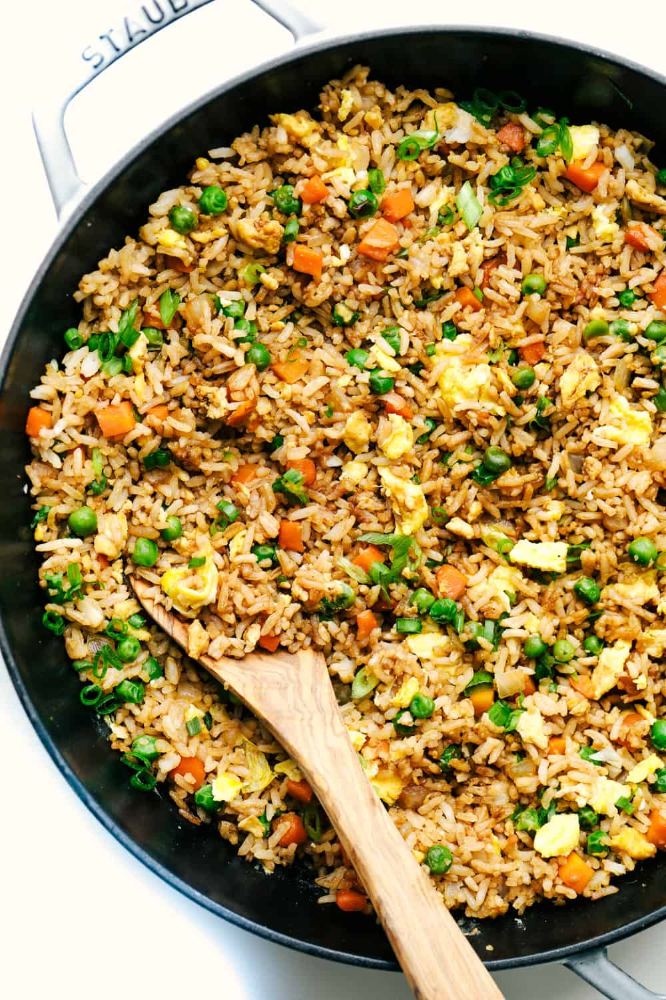

Fried Rice

Description
I have always loved fried rice. I could probably eat an entire bowl. The great thing about this recipe is that you can add whatever you would like!
I have added bacon, chicken, and ham. It is the perfect fried rice base and they say the secret ingredient to get the authentic Chinese taste is sesame oil.
Whatever it may be it is fantastic!
Ingredients
- 3 cups cooked rice
- 2 tablespoons sesame oil
- 1 small white onion, chopped
- 1 cup frozen peas and carrots, thawed
- 2-3 tablespoons soy sauce more or less to taste
- 2 eggs, lightly beaten
- 2 tablespoons green onions, chopped, optional
Steps
- Preheat a large skillet or wok to medium heat. Add the sesame oil, onion, peas, and carrots. Cook until tender.
- Slide the onion, peas, and carrots to the side, and pour the beaten eggs onto the other side of the skillet. Using a spatula, scramble the eggs. Once cooked, mix the eggs with the vegetable mix.
- Add the rice to the veggie and egg mixture. Pour the soy sauce on top. Stir and fry the rice and veggie mixture until warmed through and combined.
- Add chopped green onions if desired.